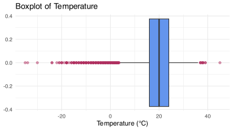
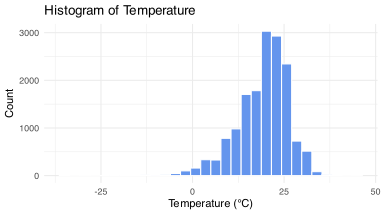
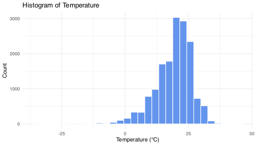
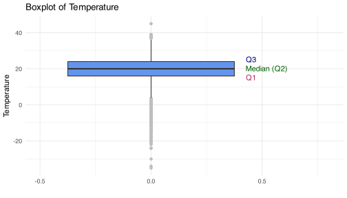

Exploratory Data Analysis
DSCI 200
Katie Burak, Gabriela V. Cohen Freue
Last modified – 04 February 2026
\[ \DeclareMathOperator*{\argmin}{argmin} \DeclareMathOperator*{\argmax}{argmax} \DeclareMathOperator*{\minimize}{minimize} \DeclareMathOperator*{\maximize}{maximize} \DeclareMathOperator*{\find}{find} \DeclareMathOperator{\st}{subject\,\,to} \newcommand{\E}{E} \newcommand{\Expect}[1]{\E\left[ #1 \right]} \newcommand{\Var}[1]{\mathrm{Var}\left[ #1 \right]} \newcommand{\Cov}[2]{\mathrm{Cov}\left[#1,\ #2\right]} \newcommand{\given}{\ \vert\ } \newcommand{\X}{\mathbf{X}} \newcommand{\x}{\mathbf{x}} \newcommand{\y}{\mathbf{y}} \newcommand{\P}{\mathcal{P}} \newcommand{\R}{\mathbb{R}} \newcommand{\norm}[1]{\left\lVert #1 \right\rVert} \newcommand{\snorm}[1]{\lVert #1 \rVert} \newcommand{\tr}[1]{\mbox{tr}(#1)} \newcommand{\brt}{\widehat{\beta}^R_{s}} \newcommand{\brl}{\widehat{\beta}^R_{\lambda}} \newcommand{\bls}{\widehat{\beta}_{ols}} \newcommand{\blt}{\widehat{\beta}^L_{s}} \newcommand{\bll}{\widehat{\beta}^L_{\lambda}} \newcommand{\U}{\mathbf{U}} \newcommand{\D}{\mathbf{D}} \newcommand{\V}{\mathbf{V}} \]
Welcome to DSCI 200! 🎉
About us
- Dr. Katie Burak
- kburak@stat.ubc.ca
- https://katieburak.github.io/
- Assistant Professor of Teaching, Department of Statistics

- Dr. Gabriela V. Cohen Freue
- gcohen@stat.ubc.ca
- https://gcohenfr.github.io/
- Professor, Department of Statistics

Course breakdown
| Deliverable | Percent Grade |
|---|---|
| Worksheets | 7% |
| iClicker | 2% |
| Case studies | 15% |
| Midterm | 25% |
| Final | 50% |
| Bonus regrade percent | 1% |
Coruse-level Learning Objectives
- Conduct exploratory data analysis using statistical and visualization tools to generate hypotheses.
- Reflect on how data were collected, identify design improvements, and discuss study limitations.
- Recognize when simulation is useful and design and run appropriate simulations.
- Detect outliers and anomalies, apply handling strategies, and assess their impact on conclusions.
- Identify missing data mechanisms, apply handling strategies, and assess their impact on conclusions.
- Choose a data acquisition strategy and write reproducible scripts to read data.
- Evaluate data privacy needs, apply suitable privacy techniques, and reflect on their consequences.
- Determine and justify data ownership in a given context.
Course website
https://ubc-dsci.github.io/dsci-200/

Attribution
This material is adapted from Chapter 10 of R for Data Science (2e) and Exploratory Data Analysis with R.
What Is EDA?
Before jumping into analysis or building models, we need to understand the data. This is where exploratory data analysis (EDA) comes in.
EDA is not a strict process. Instead, it’s a flexible and creative cycle where you:
- Come up with questions about the data
- Investigate possible answers using visualizations, transformations, and simple models
- Let the answers inspire new or refined questions
- Eventually, you’ll land on insights that are worth digging into and sharing
EDA
Even if you’re given a clear research question, EDA still plays a key role. It’s how we check data quality, spot inconsistencies, and detect patterns. For example,
- Are there missing values?
- Do variables have unexpected distributions?
- Are there data points that don’t belong?
- All of these questions fall under the umbrella of EDA!
Learning Objectives
By the end of this lesson, you will be able to:
- Explain the purpose and importance of exploratory data analysis (EDA).
- Evaluate appropriate statistical measures for central tendency and variability.
- Select suitable visualizations for different variable types and communication goals.
- Use computer code to effectively visualize data, including understanding how different layers can be utilized to improve a visualization.
- Critique visualizations to identify and suggest improvements.
Data Visualization
- Data visualization is an important part of EDA.
- Let’s start by reviewing some of the plots we introduced in DSCI 100, as well as introducing some new ones!
Visualizing Numerical Variables
Thinking back to DSCI 100, what are some examples of plots that can be useful to visualize numerical/quantitative variables?
- Histograms
- Boxplots
- Line plots
- Jitter plots (new)
- Violin plots (new)
Loading the Data
We will be looking at historical data on Alberta’s wildfires. This data set can be found on the Diverse Data Hub, a resource designed to promote the use of data focused on socially relevant topics.
# A tibble: 6 × 35
year fire_number current_size size_class latitude longitude fire_origin
<dbl> <chr> <dbl> <chr> <dbl> <dbl> <chr>
1 2006 EWF004 0.01 A 53.5 -117. FPD Staff
2 2006 LWF001 0.6 B 55.0 -112. FPD Staff
3 2006 RWF105 0.01 A 52.0 -115 HAC1H
4 2006 CWF162 0.01 A 49.7 -115. FPD Staff
5 2006 WWF072 0.01 A 54.1 -118. HAC1R
6 2006 GWF071 0.01 A 55.1 -119. HAC1H
# ℹ 28 more variables: general_cause <chr>, responsible_group <chr>,
# activity_class <chr>, true_cause <chr>, fire_start_date <dttm>,
# detection_agent_type <chr>, detection_agent <chr>,
# assessment_hectares <dbl>, fire_spread_rate <dbl>, fire_type <chr>,
# fire_position_on_slope <chr>, weather_conditions_over_fire <chr>,
# temperature <dbl>, relative_humidity <dbl>, wind_direction <chr>,
# wind_speed <dbl>, fuel_type <chr>, initial_action_by <chr>, …Boxplot
Boxplot to investigate the temperature conditions (°C) for the various wildfires.
Violin Plot
- Violin plots are an alternative to boxplots that can show more granularity.
Jitter plot
- Jitter plots are another way to visualize a numerical variable.
- You can play around with the width and transparency (
alpha) to make the plot more readable and avoid too much overlap. - As you will see, it’s not particularly suitable when you have a large number of observations.

Histogram
Histograms also show the distribution of a quantitative variable.
Line plots
Line plots help us visualize a quantity over time.
wildfire |>
group_by(year) |>
summarise(avg_temperature = mean(temperature, na.rm = TRUE)) |>
ggplot(aes(x = year, y = avg_temperature)) +
geom_line(color = "cornflowerblue", linewidth = 1) +
geom_point(color = "cornflowerblue", size = 2) +
labs(
title = "Average Temperature Over Time",
x = "Year",
y = "Average Temperature (°C)"
) +
theme_minimal()
Visualizing Categorical Data
What is a plot we can use to visualize a categorical variable?
- Bar plots
Bar plots
true_cause_summary <- wildfire |>
count(true_cause, sort = TRUE) |>
slice_max(n, n = 10)
barplot <- ggplot(true_cause_summary,
aes(x = n,
y = fct_reorder(true_cause, n))) +
geom_bar(stat = "identity", fill = "cornflowerblue") +
labs(x = "Count", y = "True Cause", title = "Top 10 Wildfire Causes") +
theme(
plot.title = element_text(size = 16),
axis.title.x = element_text(size = 12),
axis.title.y = element_text(size = 12)
)Asking Questions
- Now that we have reviewed some common plots, let’s get back to the why.
- EDA is driven by questions. Each one shines a light on a different part of the dataset.
- The goal isn’t to answer every question, but to use them to guide exploration.
Here are some examples:
- What does this variable look like?
- How does it relate to other variables?
- Are there unusual values?
- What patterns emerge over time or across groups?
You don’t need the perfect question at the start! Often, you won’t know what to ask until you’ve seen the data…
- Start with broad questions
- Let early insights shape new, more specific ones
- Dig deeper with each iteration
Types of Questions
Although there are many types of exploratory questions, we will focus on the following three questions:
- What is the central tendency of my variable(s)?
- What type of variation occurs within my variables?
- What type of covariation occurs between my variables?
Measures of Central Tendency
When we want to summarize a numeric variable with a single value, we often report a measure of central tendency.
Common measures include the mean, median and mode.
These help answer questions like:
- What’s typical?
- What’s average?
- What’s most common?
The Mean
- The mean is what most people think of as “the average”.
- The sample mean is denoted as \(\bar{x}\) and is calculated by adding up all the values and dividing by how many there are.
\[\bar{x} = \sum_{i=1}^n \frac{x_i}{n},\] where \(x_i\) are the observed values and \(n\) is the sample size.
The Median
The median is the middle observation in the data when all values are sorted from smallest to largest.
50% of the data will be above and below the median.
For an odd number of observations, order them and take the middle value. \[ \{3, 4, {\color{blue}6}, 7, 10\} \rightarrow \text{median} = {\color{blue}6} \]
For an even number of observations, order them and average the two middle values. \[ \{3, 4, {\color{blue}6}, {\color{blue}7}, 10, 12\} \rightarrow \text{median}=\frac{6+7}{2}=6.5 \]
Discussion
When reporting household earnings in Vancouver, what measure of center would you choose and why?
Take 1-2 minutes to discuss this question with your neighbours and be prepared to discuss as a class!
Mean vs. Median
- The mean can be sensitive to skewness and extreme values (outliers) - much more to come later in this course about working with outliers!
- The median is more robust (less affected) by skewness and outliers in the data.
- When the data is roughly symmetric with few outliers, the mean and median will be very close.
- However, in the presence of outliers or skewness, the median may be preferred.
Example
iClicker question
The following is a histogram of relative humidity. Which statement is true?
- The mean and median are equal.
- The mean will be greater than the median.
- The median will be greater than the mean.
- Not enough information to make any conclusion.
To verify this, let’s compute the mean and median temperature:
The Mode
- The mode is the most frequent value or category for a variable.
- Data can be unimodal, bimodal or multimodal (i.e., having more than one “mode” or peak).
- The mode isn’t as commonly reported for numerical variables, but it comes in handy as a measure of central tendency for categorical data.
- For example, reporting the most common cause of wildfires.
Measures of Variablity
- If we want to understand the variation that occurs within a variable, we need a notion of variaiblity or spread.
- Common measures include:
- Variance or standard deviation
- Interquartile Range (IQR)
- Range
Variance
- The variance measures how much the observations deviate from the average value.
- The sample variance is denoted as \(s^2\) and is calculated as
\[s^2 = \frac{1}{n-1}\sum_{i=1}^n (x_i-\bar{x})^2.\]
- If the variance is low, it means the data points are close to the average, so the values are pretty similar to each other.
- If the variance is high, it means the data points are spread out over a wider range, so the values are more different from each other.
Standard deviation
- The standard deviation is often used as it is easier to interpret.
- It is the square root of the variance, so it has the same units as the original data.
- The sample standard deviation is denoted as \(s\) and is calculated as
\[s = \sqrt{\frac{1}{n-1}\sum_{i=1}^n (x_i-\bar{x})^2}.\]
Quartiles
- Before we introduce the Interquartile Range (IQR) as a measure of variability, we will first introduce the concept of quartiles.
- Quartiles divide a dataset into four equal parts, each containing 25% of the data.
- Q1 (First Quartile): The median of the lower half of the data (25% of the data is below Q1).
- Q2 (Second Quartile / Median): The middle value that divides the data into two halves (50% of the data is below Q2).
- Q3 (Third Quartile): The median of the upper half of the data (75% of the data is below Q3).

IQR
- The Interquartile Range is the distance between the first quartile (Q1) and third quartile (Q3). That is,
\[\text{IQR} = {Q3}-{Q1}\]

Quartiles define the lines on a boxplot:
Let’s compute the variance, standard devation and IQR of temperature:
iClicker Question
Which of the following is true regarding the use of standard deviation compared to the interquartile range (IQR)?
- Standard deviation is more resistant to outliers and skewness than the IQR
- IQR is a fairly resistant measure, while standard deviation is more sensitive to outliers and skewness.
- Both standard deviation and IQR are resistant to skewness.
- Neither standard deviation nor IQR are affected by extreme values.
Range
- The range is simply the difference between the maximum and minimum value of a variable.
\[\text{range(X)=max(X)-min(X)}\]
iClicker Question
Why can the range be potentially misleading as a measure of variability?
- It only considers the middle 50% of the data
- It uses all data points equally
- It is only influenced by the smallest and largest values
- It accounts for how data is clustered around the mean
Covariation
- Variation measures the variability within a variable.
- Covariation measures the variation between two or more variables.
- The way we measure or investigate covariation depends on the nature of the variables we are interested in, but a good start is to visualize the relationships!
Two categorical variables
Suppose we wanted to investigate the top 10 causes of wildfires by season.
We will create a
seasonvariable and extract the top 10 causes and store it in a separate object:
# Create season variable based on fire_start_date
wildfire_season <- wildfire |>
mutate(
month = month(fire_start_date),
season = case_when(
month %in% c(12, 1, 2) ~ "Winter",
month %in% 3:5 ~ "Spring",
month %in% 6:8 ~ "Summer",
month %in% 9:11 ~ "Fall"
),
season = factor(season, levels = c("Winter", "Spring", "Summer", "Fall"))
)
top_10_causes <- wildfire |>
count(true_cause, sort = TRUE) |>
slice_max(n, n = 10) |>
pull(true_cause)Contingency table
- Contingency tables can help display infomration for two categorical variables. However, at times they can be difficult to digest and are often better represented visually.
wildfire_season |>
filter(!is.na(season), true_cause %in% top_10_causes) |>
count(true_cause, season) |>
pivot_wider(names_from = season, values_from = n)# A tibble: 10 × 5
true_cause Winter Spring Summer Fall
<chr> <int> <int> <int> <int>
1 Abandoned Fire 38 571 382 276
2 Arson Suspected 1 254 27 19
3 Burning Substance 5 378 107 58
4 Insufficient Buffer NA 117 20 35
5 Line Impact 2 134 131 31
6 Mechanical Failure 1 74 47 12
7 Permit Related 16 236 35 11
8 Unknown 24 2196 8286 361
9 Unsafe Fire 37 576 396 298
10 Winter Burning 66 69 7 25Stacked Bar Plots
Remember that we can stack bar plots so we can include another categorical variable in the visualization.
true_cause_season_counts <- wildfire_season |>
filter(!is.na(season), true_cause %in% top_10_causes) |>
count(true_cause, season)
# Plot stacked bar chart
stacked_bar <- ggplot(true_cause_season_counts,
aes(x = n,
y = fct_reorder(true_cause, n),
fill = season)) +
geom_bar(stat = "identity") +
labs(
title = "Wildfires by True Cause and Season",
x = "Count",
y = "True Cause",
fill = "Season"
) +
theme_minimal()
Categorical & Numerical Variables
- To look at the relationship between a categorical variable and a numerical variable, we can look at these plots of a numerical variable separated by each level of a categorical variable.
Remember the use of facet_wrap() can help make complex plots much easier to interpret by splitting the data into multiple panels.

Two numerical variables
We can use a scatterplot to visualize the relationship between two numerical variables.
How would you describe the relationship between the wind speed and the size of the wildfire in terms of assessment hectares?

Next Class
We will introduce correlation as a way to quantify the relationship between two numerical variables.
Key Takeaways
EDA is a flexible, question-driven process to understand your data before modelling
Visualization helps reveal patterns, outliers and relationships
Choose appropriate plots based on variable types and what you’re trying to show
Use the right summary based on data shape and presence of outliers
UBC DSCI 200